W12. Patterns: Bridge, Flyweight, Factory Method
1. Theory
1.1 Design Patterns in Context
This week continues the study of the GoF pattern catalogue. The three patterns covered — Bridge, Flyweight, and Factory Method — span two categories:
- Structural (Bridge, Flyweight): describe how classes and objects can be combined into larger, more useful structures.
- Creational (Factory Method): deal with the best way to create instances of objects.
1.2 Bridge
1.2.1 Motivation: The Inheritance Explosion Problem
A common OOP idiom is to place an interface and its implementation inside one class, then create subclasses to specialize behavior. The difficulty arises when two independent dimensions of variation must both be expressed through inheritance. Consider a portable GUI window system that must support multiple window types (text window, icon window, dialog) and multiple platforms (Android, iOS, Linux). With pure inheritance the designer creates one subclass per combination:
AbstractWindow → TextWindowAndroid, TextWindowIOS, IconWindowAndroid, IconWindowIOS, ...Adding a third platform forces every existing window type to gain a new subclass — combinatorial explosion. The root cause is that the relation between abstraction and implementation is fixed at compile time through inheritance, leaving no room for independent evolution.

1.2.2 The Bridge Solution
The Bridge pattern resolves this by splitting the single hierarchy into two separate, independently extensible hierarchies connected via composition (a reference field), not inheritance:
- Abstraction hierarchy — represents the high-level concept (e.g., window types). The base abstraction holds a reference to an implementation object and delegates low-level calls to it.
- Implementation hierarchy — represents the platform-specific details. All platform variants implement a common
Implementationinterface.
The reference from the abstraction to the implementation is the bridge. The client creates an abstraction object and passes the desired implementation at construction time; afterwards it works exclusively through the abstraction interface.

The GUI example rewritten with Bridge:

A C++ code sketch illustrating how the bridge reference is established:
class Window {
public:
Window(WindowImpl* i) : impl(i) { }
virtual void open();
virtual void close();
virtual void drawLine(coords) { impl->drawLine(coords); }
virtual void drawRect(coords) { impl->drawRect(coords); }
virtual void drawText(const char* t, coords) { impl->drawText(t, coords); }
private:
WindowImpl* impl; // the bridge
};
class WindowImpl {
public:
virtual void drawLine(coords) = 0;
virtual void drawRect(coords) = 0;
virtual void drawText(const char*, coords) = 0;
};
class IosWindow : public WindowImpl {
public:
void drawLine(coords) override { /* iOS rendering */ }
void drawRect(coords) override { /* iOS rendering */ }
void drawText(const char*, coords) override { /* iOS rendering */ }
};
// Client usage
Window* w = new Window(new IosWindow());
w->drawLine(coords); // delegates to IosWindow::drawLineThe client code does not depend on IosWindow at all — it uses only Window’s interface. When a Linux platform is added, only a new LinuxWindow : WindowImpl class is created; Window, TextWindow, and all client code remain unchanged.
1.2.3 Applicability
Apply Bridge when:
- A class has several independently varying dimensions (e.g., shape × color, window type × platform).
- You want to switch implementations at runtime without rebuilding the abstraction.
- Both abstractions and implementations should be extensible via subclassing.
- Changes in the implementation should not break client code.
1.2.4 How to Apply Bridge (Step by Step)
- Identify the independent dimensions in your classes (e.g., abstraction vs. platform, domain vs. infrastructure).
- Define the operations the client needs in the base abstraction class.
- Declare the operations available on all platforms in a general
Implementationinterface. - Create concrete implementation classes for each platform, all conforming to the
Implementationinterface. - Add a reference field of type
Implementationinside the abstraction class. Delegate low-level work to the object held in that field. - Create refined abstractions (subclasses of the base abstraction) for each variant of high-level logic.
- In client code, pass a concrete implementation object to the abstraction’s constructor. After that, the client works only with the abstraction.
1.2.5 Bridge vs. Adapter
Bridge and Adapter look structurally similar — both use composition to forward calls — but their intent differs:
- Adapter resolves incompatibilities between two existing interfaces. It is a retrofit applied after the fact.
- Bridge is designed upfront to separate an abstraction from its implementations so both can vary independently.
1.2.6 Pros and Cons
- Pros
- Platform-independent abstractions: client code never touches platform details.
- Open/Closed Principle: new abstractions and new implementations can be added independently without touching each other.
- Single Responsibility Principle: high-level logic lives in the abstraction; platform details live in the implementation.
- Implementations can be switched at runtime by replacing the reference field.
- Cons
- Adds complexity when the class being split is already highly cohesive and has only one reasonable implementation.
1.3 Flyweight
1.3.1 Motivation: Memory Pressure from Many Similar Objects
Some applications must create enormous numbers of fine-grained objects. A forest renderer may need 100 000 trees; a text editor represents every character as an object carrying its font, size, and color; a traffic simulator holds one object per vehicle on a busy road. When each object stores all of its data independently, memory consumption grows proportionally to the object count — quickly becoming prohibitive.
The core insight is that, in such scenarios, most objects share a large portion of their state. All “Summer Oak” trees in a forest share the same name, leaf color, and texture data. Only their position (
1.3.2 Intrinsic vs. Extrinsic State
The Flyweight pattern divides an object’s fields into two categories:
- Intrinsic state (repeating state): data that is identical across many objects, does not change, and can be safely shared. This data is stored inside the flyweight object itself and is made immutable (set once in the constructor, never modified afterwards).
- Extrinsic state (unique state): data that differs per object instance (e.g., position, identity). This data is not stored in the flyweight; instead it is passed as a parameter when calling the flyweight’s methods, or it is stored in a separate context object.
1.3.3 Structure

- Flyweight: holds only the intrinsic (shared) state. Its
operation()accepts the extrinsic state as a parameter each time it is called. - FlyweightFactory: manages a pool (cache) of flyweight instances. When a client requests a flyweight with a given intrinsic state, the factory checks the cache first; if a matching flyweight already exists, it is returned; otherwise, a new one is created, cached, and returned.
- Context: holds the extrinsic (unique) state for one logical instance. Its
operation()method delegates to the flyweight, passing the unique state as an argument. - Client: either computes the extrinsic state itself and passes it to flyweight methods, or stores it in a
Contextobject.
1.3.4 Forest Example
The landscape design example from the lecture illustrates the memory saving concretely.
Without Flyweight — every tree stores all of its own data:
class Tree {
public:
int x, y;
int age;
Tree(...) { ... }
void display() { ... }
};
// 100 000 Tree instances, each carrying its own copy of shared rendering dataWith Flyweight — shared rendering data lives in one TreeType; position and age are extrinsic:
// TreeType.java — Flyweight: intrinsic (shared) state
public class TreeType {
private String name;
private Color leafColor;
private String otherTreeData; // e.g., texture
public TreeType(String name, Color color, String otherTreeData) {
this.name = name;
this.leafColor = color;
this.otherTreeData = otherTreeData;
}
public void draw(Graphics g, int x, int y) {
g.setColor(Color.BLACK);
g.fillRect(x - 1, y, 3, 5);
g.setColor(leafColor);
g.fillOval(x - 5, y - 10, 10, 10);
}
}
// Tree.java — Context: extrinsic (unique) state
public class Tree {
private int x;
private int y;
private TreeType type; // reference to the shared flyweight
public Tree(int x, int y, TreeType type) {
this.x = x;
this.y = y;
this.type = type;
}
public void draw(Graphics g) {
type.draw(g, x, y); // pass extrinsic state (x, y) to flyweight
}
}
// TreeFactory.java — FlyweightFactory: pool of TreeType objects
public class TreeFactory {
static Map<String, TreeType> treeTypes = new HashMap<>();
public static TreeType getTreeType(String name, Color color, String data) {
TreeType result = treeTypes.get(name);
if (result == null) {
result = new TreeType(name, color, data);
treeTypes.put(name, result);
}
return result;
}
}With 100 000 trees of 2 types, the memory saving is dramatic: instead of 100 000 large objects, the system holds 100 000 lightweight Tree contexts (8 bytes each) plus only 2 TreeType flyweights (~30 bytes each). Total: ~782 KB instead of ~3.6 MB — a reduction of more than 4×.
1.3.5 How to Apply Flyweight (Step by Step)
- Divide the fields of the class into intrinsic (shared, immutable) and extrinsic (unique, contextual) parts.
- Move all intrinsic fields into the flyweight class. Make them immutable — set once in the constructor, never changed.
- Revise every method that previously read extrinsic fields: replace each such field with a method parameter.
- Create a
FlyweightFactorythat maintains a cache (e.g., aHashMap) of existing flyweights keyed by their intrinsic state. Clients obtain flyweights only through the factory. - Move the extrinsic state and the flyweight reference into a separate
Contextclass if that improves clarity.
1.3.6 Applicability
Use Flyweight only when:
- The program must support a huge number of objects that barely fit into available RAM.
- Many of those objects contain duplicate state that can be extracted and shared.
- The extrinsic state can be conveniently computed or stored by the client.
1.3.7 Pros and Cons
- Pros
- Dramatic reduction in RAM when many objects share large amounts of state.
- Cons
- CPU cycles may increase because extrinsic state must be recomputed or looked up on every method call instead of being read from a field.
- The separation of intrinsic and extrinsic state makes the code significantly harder to understand. New team members often find it confusing why an object’s state is split across two different locations.
- After applying the pattern, it is impossible to improve the behavior of one individual instance independently — all instances sharing a flyweight are bound to the same intrinsic state.
1.4 Factory Method
1.4.1 Motivation: Decoupling Object Creation
A class that directly instantiates the objects it needs with new ConcreteProduct() is tightly coupled to that concrete type. If the set of product types must change — or if different deployment contexts need different products — the creator class must be modified. This violates the Open/Closed Principle.
The Factory Method pattern delegates the responsibility of object creation to subclasses. The base Creator class declares an abstract createProduct() method (the factory method) whose return type is the common Product interface. Each ConcreteCreator subclass overrides createProduct() to return the appropriate ConcreteProduct. The creator’s someOperation() method calls createProduct() without knowing which concrete product it receives — it only knows the Product interface.
1.4.2 Structure

Inside the Creator:
public abstract class Creator {
public void someOperation() {
Product p = createProduct(); // factory method — type unknown here
p.doStuff();
}
public abstract Product createProduct();
}Inside a concrete creator:
public class ConcreteCreatorA extends Creator {
@Override
public Product createProduct() {
return new ConcreteProductA();
}
}The caller selects a creator and calls someOperation() — it never touches new ConcreteProductA() directly.
1.4.3 Logistics Example
The Lab slides show a logistics system where Logistics is the abstract creator. RoadLogistics overrides createTransport() to return a Truck; SeaLogistics returns a Ship. The planDelivery() method in the base class calls createTransport() and dispatches the delivery — it works identically whether the transport is a truck, a ship, or, in the future, a plane.

1.4.4 Applicability
Use Factory Method when:
- You do not know in advance the exact type of object your code should work with — the type is determined only at runtime (e.g., by configuration or user input).
- You want users of your library or framework to extend its internal components by subclassing the creator without touching the library itself.
- You want to reuse existing objects (via a factory cache) instead of rebuilding them from scratch every time.
1.4.5 How to Apply Factory Method (Step by Step)
- Define a common
Productinterface with the methods that every product variant must support. - Add an abstract
createProduct(): Productfactory method to theCreatorclass. Replace all directnew ConcreteProduct()calls inside the creator’s other methods with calls tocreateProduct(). - Create one
ConcreteCreatorsubclass per product type; each overridescreateProduct()to return the appropriate product. - If the base factory method is left empty after all extraction, make it abstract. Otherwise keep a default implementation as a fallback.
1.4.6 Pros and Cons
- Pros
- Eliminates tight coupling between the creator and concrete products.
- Single Responsibility Principle: product creation code is concentrated in one place (the concrete creator), making it easy to change.
- Open/Closed Principle: introducing a new product type only requires a new
ConcreteCreatorsubclass — existing creator and client code is untouched.
- Cons
- Each new product type requires a new
ConcreteCreatorsubclass. If the creator hierarchy is already large, this adds even more classes and can make the design harder to navigate.
- Each new product type requires a new
2. Definitions
- Bridge: A structural GoF pattern that splits a class into two independent hierarchies — abstraction and implementation — connected by a reference field (the bridge), allowing both to vary independently.
- Abstraction (Bridge): The high-level interface/control layer in the Bridge pattern. It holds a reference to an
Implementationobject and delegates low-level work to it. - Implementation (Bridge): The platform-specific interface in the Bridge pattern. All concrete platform classes conform to this interface.
- Refined Abstraction: A subclass of the Abstraction in the Bridge pattern that adds or specializes high-level functionality without touching implementation details.
- Combinatorial Explosion: The problem that arises when two or more independent dimensions of variation are expressed through pure inheritance, causing the number of subclasses to grow as the product of the dimension sizes.
- Flyweight: A structural GoF pattern that reduces memory consumption by sharing common (intrinsic) state among many fine-grained objects, while keeping unique (extrinsic) state outside the shared object.
- Intrinsic State: The immutable, shared portion of a flyweight object’s state. It is stored inside the flyweight and identical across all objects that reference it.
- Extrinsic State: The unique, contextual portion of state that varies per object instance. It is not stored in the flyweight; it is passed as a parameter when calling flyweight methods or held in a separate Context object.
- FlyweightFactory: A factory class that manages a cache of existing flyweight objects. It creates a new flyweight only when one with the requested intrinsic state does not already exist in the cache.
- Context (Flyweight): A lightweight object that stores the extrinsic (unique) state for one logical entity and holds a reference to its shared Flyweight object.
- Factory Method: A creational GoF pattern that defines an abstract method in a base Creator class for creating a Product object, allowing subclasses (ConcreteCreators) to decide which ConcreteProduct to instantiate.
- Creator: The abstract base class in the Factory Method pattern. It declares the abstract
createProduct()factory method and contains business logic that uses the returned product via the Product interface. - ConcreteCreator: A subclass of Creator that overrides
createProduct()to return a specific ConcreteProduct. - Product (Factory Method): The common interface that all concrete products must implement. It defines the contract that Creator’s business logic relies on.
- Open/Closed Principle: A SOLID principle stating that a class should be open for extension (new behavior can be added via subclassing) but closed for modification (existing code is not changed).
- Single Responsibility Principle: A SOLID principle stating that a class should have only one reason to change.
3. Practice
3.1. Lecture Recap — Theory Questions (Lab 11, Task 1)
Answer the following six questions to confirm your understanding of the three patterns covered this week.
(a) What is the purpose of the Bridge design pattern?
(b) Describe a real-world scenario where the Bridge pattern could be beneficial.
(c) What is the purpose of the Flyweight design pattern?
(d) Describe a real-world scenario where the Flyweight pattern could be beneficial.
(e) What is the purpose of the Factory design pattern?
(f) Describe a real-world scenario where the Factory pattern could be beneficial.
Click to see the solution
(a) Purpose of Bridge: The Bridge pattern solves the combinatorial explosion problem that occurs when two independent dimensions of variation are both expressed through inheritance. By splitting the class into an Abstraction hierarchy (high-level logic) and an Implementation hierarchy (platform/engine details), and connecting them via composition, both hierarchies can be extended independently without touching each other.
(b) Real-world scenario for Bridge: A remote control application supports multiple device types (TV, stereo, air conditioner) and multiple protocol stacks (Bluetooth, IR, Wi-Fi). Using pure inheritance would require one subclass per combination (BluetoothTV, BluetoothStereo, IRStereo, …). With Bridge, a RemoteControl abstraction hierarchy holds a reference to a DeviceProtocol implementation hierarchy. Adding a new protocol only adds one new DeviceProtocol subclass; adding a new device type only adds one new RemoteControl subclass.
(c) Purpose of Flyweight: The Flyweight pattern solves the problem of excessive memory consumption when a program must maintain a very large number of similar objects. By extracting the shared (intrinsic) state into a single shared object and storing only the unique (extrinsic) state per instance, the pattern reduces the total number of distinct objects — and therefore the total memory footprint — dramatically.
(d) Real-world scenario for Flyweight: A text editor represents each character on screen as an object with a font, size, and color attribute. A document with 200 000 characters would consume enormous memory if each character object stored its own copy of these attributes. With Flyweight, each unique (font, size, color) combination is stored once as a CharacterFormat flyweight. Each character object holds only its position and a reference to the shared format — reducing memory consumption by orders of magnitude when many characters share the same formatting.
(e) Purpose of Factory Method: The Factory Method pattern solves the problem of tight coupling between creators and concrete products. By delegating object creation to a factory method that subclasses override, the base creator class becomes independent of the specific types it creates. Clients select the appropriate creator subclass; the rest of the code works entirely through the product interface.
(f) Real-world scenario for Factory Method: A cross-platform UI framework provides a Dialog base class with a renderWindow() method that creates buttons by calling the abstract createButton() factory method. WindowsDialog overrides createButton() to return a WindowsButton; WebDialog overrides it to return an HTMLButton. Application startup code selects the right Dialog subclass based on the detected environment; all rendering code in Dialog.renderWindow() never changes.
3.2. Implement Bridge for a Music Streaming App (Lab 11, Task 2)
A music streaming app needs music players that can play music of different genres (pop, jazz) and support different audio codecs (MP3, WAV).
Task:
- Identify the abstraction, implementation, refined abstractions, and concrete implementations.
- Use the Bridge design pattern to redesign the music streaming app.
- Add a music player for the rock music genre. Also, add an audio codec for FLAC.
Click to see the solution
Key Concept: Genre (pop, jazz, rock) and codec (MP3, WAV, FLAC) are two independent dimensions. Combining them with inheritance would give
Step 1 — Identify roles:
- Abstraction:
MusicPlayer— the genre-specific player; knows what kind of music to play and delegates audio encoding to the implementation. - Implementation interface:
AudioCodec— the codec; knows how to encode/decode the audio stream. - Refined Abstractions:
PopPlayer,JazzPlayer,RockPlayer - Concrete Implementations:
MP3Codec,WAVCodec,FLACCodec
Step 2 — Implementation:
// AudioCodec.java — Implementation interface
public interface AudioCodec {
void encode(String track);
}
// MP3Codec.java — Concrete Implementation
public class MP3Codec implements AudioCodec {
@Override
public void encode(String track) {
System.out.println("Encoding [" + track + "] as MP3");
}
}
// WAVCodec.java — Concrete Implementation
public class WAVCodec implements AudioCodec {
@Override
public void encode(String track) {
System.out.println("Encoding [" + track + "] as WAV");
}
}
// FLACCodec.java — Concrete Implementation (Step 3 addition)
public class FLACCodec implements AudioCodec {
@Override
public void encode(String track) {
System.out.println("Encoding [" + track + "] as FLAC (lossless)");
}
}
// MusicPlayer.java — Abstraction
public abstract class MusicPlayer {
protected AudioCodec codec; // the bridge
public MusicPlayer(AudioCodec codec) {
this.codec = codec;
}
public abstract void play(String track);
}
// PopPlayer.java — Refined Abstraction
public class PopPlayer extends MusicPlayer {
public PopPlayer(AudioCodec codec) { super(codec); }
@Override
public void play(String track) {
System.out.print("Pop style: ");
codec.encode(track);
}
}
// JazzPlayer.java — Refined Abstraction
public class JazzPlayer extends MusicPlayer {
public JazzPlayer(AudioCodec codec) { super(codec); }
@Override
public void play(String track) {
System.out.print("Jazz improvisation: ");
codec.encode(track);
}
}
// RockPlayer.java — Refined Abstraction (Step 3 addition)
public class RockPlayer extends MusicPlayer {
public RockPlayer(AudioCodec codec) { super(codec); }
@Override
public void play(String track) {
System.out.print("Rock riff: ");
codec.encode(track);
}
}
// Main.java — Client
public class Main {
public static void main(String[] args) {
MusicPlayer popMp3 = new PopPlayer(new MP3Codec());
MusicPlayer jazzWav = new JazzPlayer(new WAVCodec());
MusicPlayer rockFl = new RockPlayer(new FLACCodec());
popMp3.play("Happy");
jazzWav.play("Blue Moon");
rockFl.play("Stairway to Heaven");
// Switch codec at runtime — no new class needed
MusicPlayer rockMp3 = new RockPlayer(new MP3Codec());
rockMp3.play("Highway to Hell");
}
}Expected output:
Pop style: Encoding [Happy] as MP3
Jazz improvisation: Encoding [Blue Moon] as WAV
Rock riff: Encoding [Stairway to Heaven] as FLAC (lossless)
Rock riff: Encoding [Highway to Hell] as MP3Answer: Adding RockPlayer required only one new class in the abstraction hierarchy; adding FLACCodec required only one new class in the implementation hierarchy. Neither addition touched any existing class.
3.3. Implement Flyweight for a Text Formatter (Lab 11, Task 3)
Given starter code for a text formatter written in a memory-inefficient way (each character stores its own font, size, and color).
Task:
- Create a
FormatTypeclass to represent a preset font–size–color combination (the flyweight). - Create a
FormatFactoryclass maintaining a static dictionary of used formats. - Complete the starter code following the Flyweight design pattern to significantly reduce memory usage.
Click to see the solution
Key Concept: The combination (font, size, color) is the intrinsic state — shared across all characters that use the same formatting. The character’s position in the document and its actual glyph are the extrinsic state. FormatType is the flyweight; FormatFactory is the cache; each Character (Context) stores only the extrinsic part and a reference to its FormatType.
// FormatType.java — Flyweight: intrinsic (shared, immutable) state
public class FormatType {
private final String font;
private final int size;
private final String color;
public FormatType(String font, int size, String color) {
this.font = font;
this.size = size;
this.color = color;
}
public void applyFormat(char glyph, int position) {
System.out.printf(
"Char '%c' at pos %d — font=%s, size=%d, color=%s%n",
glyph, position, font, size, color);
}
@Override
public String toString() {
return font + "-" + size + "-" + color;
}
}
// FormatFactory.java — FlyweightFactory: maintains a cache of FormatType instances
public class FormatFactory {
private static final Map<String, FormatType> cache = new HashMap<>();
public static FormatType getFormat(String font, int size, String color) {
String key = font + "-" + size + "-" + color;
FormatType ft = cache.get(key);
if (ft == null) {
ft = new FormatType(font, size, color);
cache.put(key, ft);
System.out.println("FormatFactory: created new FormatType — " + key);
}
return ft;
}
public static int cacheSize() { return cache.size(); }
}
// Character.java — Context: extrinsic (unique) state + flyweight reference
public class Character {
private final char glyph;
private final int position;
private final FormatType format; // shared flyweight
public Character(char glyph, int position, FormatType format) {
this.glyph = glyph;
this.position = position;
this.format = format;
}
public void display() {
format.applyFormat(glyph, position);
}
}
// Main.java — Client
public class Main {
public static void main(String[] args) {
List<Character> document = new ArrayList<>();
// Two thousand characters share the same two FormatType objects
for (int i = 0; i < 1000; i++) {
FormatType bold = FormatFactory.getFormat("Arial", 12, "black");
document.add(new Character('A', i, bold));
}
for (int i = 1000; i < 2000; i++) {
FormatType italic = FormatFactory.getFormat("Times", 10, "blue");
document.add(new Character('b', i, italic));
}
System.out.println("\nDocument size: " + document.size() + " characters");
System.out.println("Distinct FormatType objects: " + FormatFactory.cacheSize());
// Display first three characters
document.get(0).display();
document.get(1000).display();
}
}Expected output (abridged):
FormatFactory: created new FormatType — Arial-12-black
FormatFactory: created new FormatType — Times-10-blue
Document size: 2000 characters
Distinct FormatType objects: 2
Char 'A' at pos 0 — font=Arial, size=12, color=black
Char 'b' at pos 1000 — font=Times, size=10, color=blueAnswer: 2 000 character objects exist, but only 2 FormatType objects were ever created. Without Flyweight, each character would carry its own copy of font, size, and color, multiplying memory by 2 000.
3.4. Implement Factory Method for a Transport System (Lab 11, Task 4)
The diagram below describes a Factory Method use case for a transport system. Implement it.
- An
ITransportinterface with methoddeliver(): void. - Three concrete classes implementing
ITransport:Truck(with fieldaddress: String),Ship(with fieldcountry: String),Plane(with fieldcountry: String). - A
TransportFactoryclass with methodgetTransport(): ITransportthat creates the correct transport based on input. - A
FactoryDemoclass withmain()that exercises the factory.
Click to see the solution
Key Concept: TransportFactory.getTransport() decides which concrete ITransport to instantiate. The FactoryDemo client works only through ITransport — it never calls new Truck() directly.
// ITransport.java — Product interface
public interface ITransport {
void deliver();
}
// Truck.java — Concrete Product
public class Truck implements ITransport {
private String address;
public Truck(String address) {
this.address = address;
}
@Override
public void deliver() {
System.out.println("Truck delivering by road to: " + address);
}
}
// Ship.java — Concrete Product
public class Ship implements ITransport {
public String country;
public Ship(String country) {
this.country = country;
}
@Override
public void deliver() {
System.out.println("Ship delivering by sea to: " + country);
}
}
// Plane.java — Concrete Product
public class Plane implements ITransport {
public String country;
public Plane(String country) {
this.country = country;
}
@Override
public void deliver() {
System.out.println("Plane delivering by air to: " + country);
}
}
// TransportFactory.java — Creator / Factory
public class TransportFactory {
/**
* Factory method: selects and creates the appropriate transport.
* In a real system the selection could be driven by config, distance, weight, etc.
*/
public ITransport getTransport(String type, String destination) {
switch (type.toLowerCase()) {
case "truck": return new Truck(destination);
case "ship": return new Ship(destination);
case "plane": return new Plane(destination);
default: throw new IllegalArgumentException("Unknown transport type: " + type);
}
}
}
// FactoryDemo.java — Client
public class FactoryDemo {
public static void main(String[] args) {
TransportFactory factory = new TransportFactory();
ITransport t1 = factory.getTransport("truck", "123 Main St, Kazan");
ITransport t2 = factory.getTransport("ship", "Germany");
ITransport t3 = factory.getTransport("plane", "Japan");
t1.deliver();
t2.deliver();
t3.deliver();
}
}Expected output:
Truck delivering by road to: 123 Main St, Kazan
Ship delivering by sea to: Germany
Plane delivering by air to: JapanAnswer: FactoryDemo is decoupled from all concrete transport classes. To add ElectricBike transport, only a new ElectricBike class and one new case in TransportFactory are required — FactoryDemo is untouched.
3.5. Design Bridge for a List with Stack Extension (Lecture 11, Task 1)
There are two implementations of a list: one based on an array, the second using pointers (linked list).
- Write the configuration of an abstract list interface (independent from the implementation) and two implementations using the Bridge pattern.
- Add a new
Stackclass derived from the abstract list interface — again, using the Bridge pattern approach.
Click to see the solution
Key Concept: The list data structure is the abstraction; the storage mechanism (array vs. linked list) is the implementation. Stack is a refined abstraction — it adds stack-specific operations (push, pop, peek) on top of the list abstraction without touching the storage implementations.
Role assignment:
| Role | Class |
|---|---|
| Abstraction | AbstractList |
| Refined Abstraction | AbstractStack |
| Implementation interface | ListImpl |
| Concrete Implementation 1 | ArrayListImpl |
| Concrete Implementation 2 | LinkedListImpl |

// ListImpl.java — Implementation interface
public interface ListImpl {
void implAdd(Object item);
void implRemove(int index);
Object implGet(int index);
int implSize();
}
// ArrayListImpl.java — Concrete Implementation 1
import java.util.ArrayList;
public class ArrayListImpl implements ListImpl {
private ArrayList<Object> data = new ArrayList<>();
public void implAdd(Object item) { data.add(item); }
public void implRemove(int index) { data.remove(index); }
public Object implGet(int index) { return data.get(index); }
public int implSize() { return data.size(); }
}
// LinkedListImpl.java — Concrete Implementation 2
import java.util.LinkedList;
public class LinkedListImpl implements ListImpl {
private LinkedList<Object> data = new LinkedList<>();
public void implAdd(Object item) { data.add(item); }
public void implRemove(int index) { data.remove(index); }
public Object implGet(int index) { return data.get(index); }
public int implSize() { return data.size(); }
}
// AbstractList.java — Abstraction
public class AbstractList {
protected ListImpl impl; // the bridge
public AbstractList(ListImpl impl) { this.impl = impl; }
public void add(Object item) { impl.implAdd(item); }
public void remove(int index) { impl.implRemove(index); }
public Object get(int index) { return impl.implGet(index); }
public int size() { return impl.implSize(); }
}
// AbstractStack.java — Refined Abstraction
public class AbstractStack extends AbstractList {
public AbstractStack(ListImpl impl) { super(impl); }
public void push(Object item) {
add(item); // append to end
}
public Object pop() {
int last = size() - 1;
Object top = get(last);
remove(last);
return top;
}
public Object peek() {
return get(size() - 1);
}
}
// Main.java — Client
public class Main {
public static void main(String[] args) {
// Stack backed by an array
AbstractStack stackArr = new AbstractStack(new ArrayListImpl());
stackArr.push(10);
stackArr.push(20);
stackArr.push(30);
System.out.println("Peek: " + stackArr.peek()); // 30
System.out.println("Pop: " + stackArr.pop()); // 30
System.out.println("Size: " + stackArr.size()); // 2
// Same stack logic, different implementation — just swap the bridge
AbstractStack stackLink = new AbstractStack(new LinkedListImpl());
stackLink.push("A");
stackLink.push("B");
System.out.println("Pop: " + stackLink.pop()); // B
}
}Expected output:
Peek: 30
Pop: 30
Size: 2
Pop: BAnswer: The implementation can be swapped from array to linked list by changing the single constructor argument — all stack logic in AbstractStack is unchanged. Adding a Deque refined abstraction would again require zero changes to ArrayListImpl or LinkedListImpl.